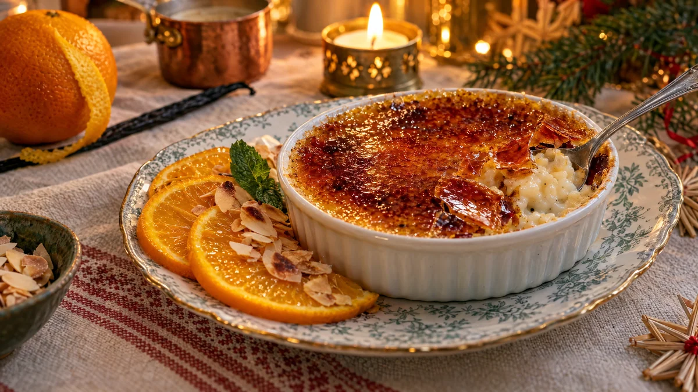

RESTFEST · RECEPTDessert
Brûlée på gårdagens risgrynsgröt med apelsin
Resterna från grötkastrullen, lite grädde och socker. Under ett knäckigt, glasblankt karamelltäcke väntar en krämig gröt som doftar vanilj och apelsin. Bredvid ligger saftiga skivor av färsk apelsin. Julens rester blir fransk bistrodessert.
- Förberedelse
- 15 min + minst 1 tim i kylen
- Tillagning
- 10 min
- Portioner
- 4
- Nivå
- Nybörjare
 Det här behöver du
Det här behöver du
Tryck på + vid det du behöver köpa.
Grötkräm
Karamelltäcke
Till servering
Gör så här
- Värm gröt, grädde, socker, vaniljsocker, apelsinskal och salt i en kastrull på låg värme. Rör tills gröten är krämig och lös, ca 5 minuter. Den ska vara som tjock yoghurt, så späd med mjölk om den är för fast.
- Fördela gröten i 4 ugnssäkra portionsformar, ca 1,5 dl vardera. Jämna ytan noga med baksidan av en sked.
- Kyl formarna i minst 1 timme, så att ytan blir kall och fast.
- Skär bort skal och vita hinnor från apelsinerna med en vass kniv. Skär dem i tunna skivor.
- Strö 1 msk socker i ett jämnt lager över varje form. Luta och knacka formen så att sockret täcker hela ytan.
- Med köksbrännare: håll lågan ca 5 cm från ytan och rör den hela tiden, tills sockret har smält och fått en djup bärnstensfärg.
- Utan brännare: sätt ugnen på grill, högsta värme. Ställ formarna högt upp i ugnen och grilla i 2–4 minuter. Stå kvar vid ugnen, sockret går fort från gyllene till bränt.
- Låt formarna stå i 2 minuter, så att karamellen stelnar och blir knäckig.
Har du ingen gröt över? Koka 1 dl grötris i 1¼ dl vatten i 10 minuter. Tillsätt 5 dl mjölk och låt sjuda under lock på låg värme i ca 40 minuter. Rör då och då och låt gröten svalna innan du börjar.
Dekoration och servering
- Lägg 2–3 apelsinskivor lätt överlappande bredvid varje form, på ett flatt fat eller en tallrik.
- Strö några mandelspån och lägg ett myntablad på apelsinen, inte på karamellen.
- Servera inom 30 minuter, sedan börjar karamellen mjukna.
- Ge gästerna en tesked och låt dem själva knäcka karamelltäcket, det är halva upplevelsen.
Mått och ugnstemperaturer
Måtten är svenska (dl, msk, tsk, krm). Ugnstemperaturerna gäller vanlig ugn med över- och undervärme; med varmluft, sänk med 20 grader.